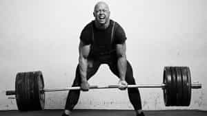

< < < Back
Improve Your Weightlifting With A Video Camera – Return Of Kings
A camera, and more specifically, a video camera, can be a highly useful tool for all physical culturists, particularly those who have developed their muscles and peripheral nervous systems to a fair degree and want an edge beyond the common rabble.
Just to clarify, I am not telling you to waste your time at the gym taking selfies of yourself in the mirror—I’ve never felt any desire to prance about in my underwear with the goal of snookering Tinder sluts, and I wouldn’t expect any of you do so either (frankly, a decent head-and-torso shot is all you need for Tinder, in my meager experience using the app).
No, I am referring to the use of video cameras specifically. Filming yourself working out can provide numerous benefits to all facets of training: one of which is training the proper form of a lift.
Most gyms have mirrors that are intended for this purpose, but I find these to be only partially effective at best for two reasons: One is that, when you are truly straining yourself on a lift, you likely won’t be able to concentrate upon your form, and looking at a mirror might actually keep you from lifting to your full potential-the iron game has a lot more mental exertion than you would expect, and besides, when you’re doing a squat, you absolutely do not want to look down to see if your knees are fully bending-angling the neck can lead to rounding of the back.
(In a marked contrast to the idea of mirrors, some such as Pavel Tsatsouline even recommend blindfold training to develop tactile response, but I’ve never tried it)
Secondly, the mirror, obviously, only shows you the front. And while your form might look good from the front, it might be a complete disaster from the back. Similarly to the squat example given above, there’s really no way to explicitly know whether your deadlift is using proper form, besides the quick and dirty judging of “whether or not my back hurts.” Besides, the human mind has a limitless capacity to delude itself, so you may be able to ignore any lower back pain as being “not serious”—I certainly did the first few times I deadlifted, before I managed to shore up my form. Part of said “shoring up” involved the use of a camera.

But a camera can be used in contexts other than mere weightlifting—it is also quite useful for martial arts practice: again, while you can do a “quick” and dirty judging of whether or not your techniques are effective by looking at how much and how violently the punching bag or dummy/whatever swings, you can still ensure that you are using proper form by recording yourself. This is perhaps more useful for those who practice grappling arts that can only be practiced against a human opponent-recording can show the both of you what you are doing right and wrong with your throws, joint locks, escapes, and all other aspects of the grappling game.
Similarly, several of my friends in high school would record themselves practicing for the track and field (athletics for the European reader) team—while the stopwatch can tell you whether you’re fast or slow, you will need a visual representation to determine why exactly you aren’t as fast as you would like to be: many runners, particularly novices, have poor mechanics in running, the least effect of which is a slow running speed-shin splints, fallen arches, and other painful ailments can result from poor running form, just as poor form in any other exercise can lead to mediocre performance and injury.
But it is in gymnastics practice and calisthenics that a camera has been most useful to me: The front lever and back lever are two difficult series of static poses that require, among other things, the back to be straight and locked. In practicing the front lever, I was always under the impression that my back was straight, until I happened to take camera footage of myself and realized that my form was improper, and my back was rounding.
For the back lever, the effect was even greater: I was under the impression that my back lever was completely in order, until I deigned to videotape myself and realized that I was not even rotating fully! Instead of having my stomach lie parallel to the floor, as it shoulder, I was in fact almost entirely vertical, with my feet pointing towards the ceiling. As one might expect, the inverted body position was a bit disorienting, and it is more difficult to judge body orientation in calisthenics such as back levers and handstand pushups then it is with other types of exercise.

If it weren’t for recording on this day, I’d never have fully rotated
Within your home, video taping is quite easy: just set the camera up with a tripod and point it at wherever you want to record. You’re not making an actual film here, as long as your whole body is on camera, you’ve been successful. However, bear in mind that in your gym you may need to get permission to record, as I usually do.
If you find yourself struggling with issues of form and technique, video recording just might be what you need.
Read More: How To Workout Correctly